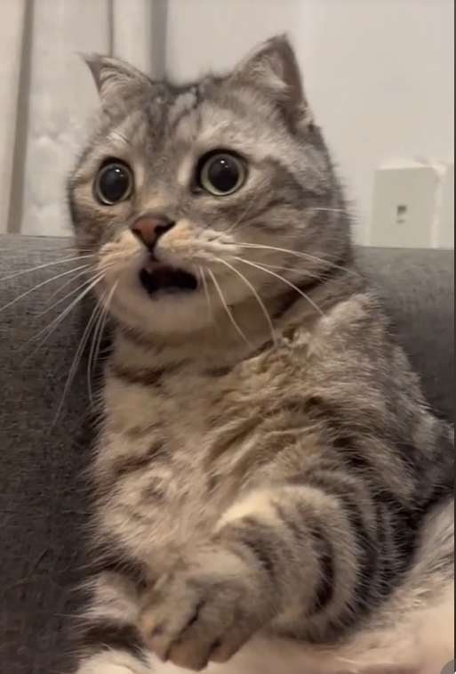
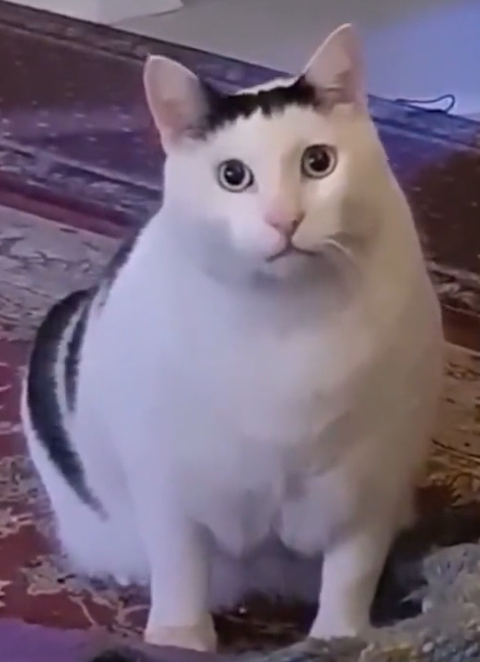

Каталог смішних котів
-

- Цей кіт відомий своїм невтомним полюванням на власний хвіст. Він завжди виглядає, ніби намагається розгадати таємницю, навіть якщо це просто миска з їжею.
-
- 
- Цей кіт відомий своєю постійною здивованою мордочкою. Здається, він завжди шокований всім, що відбувається навколо нього — чи це шум пилососа, чи просто нова іграшка.
-
- 
- Цей пухкенький біло-чорний кіт не тільки виділяється своїми розмірами, але й дивує всіх своїм унікальним звуком, який нагадує щось середнє між муркотінням і співом пташки. Його цікаві звуки роблять його ще більш чарівним!